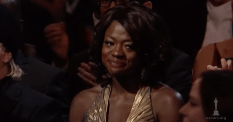

Inspiração dentro e fora das telas
Aos 56 anos de idade, Viola foi a primeira negra a levar a estatueta do Emmy como melhor atriz dramática em 2015, com seu inesquecível papel interpretando a advogada de defesa Annalise Keating na série ”How to Get Away With Murder”. Vale destacar que nas 67 edições do Emmy Awards, até então, somente atrizes brancas haviam levado o prêmio.
“A única coisa que separa mulheres que não são brancas de todas as outras pessoas é oportunidade.”
Sua História
Viola Davis nasceu no dia 11 de agosto de 1965, na fazenda de sua avó, no interior da Carolina do Sul. Quando tinha dois meses, a família mudou-se para Rhode Island e foi lá que ela cresceu. Ela juntamente com seus cinco irmãos, tiveram uma infância de muita dificuldade e pobreza, mas as coisas começaram a melhorar quando, na escola, descobriu a paixão pelos palcos.
Em 2001, Davis ganhou seu primeiro Tony da carreira, como Melhor Atriz Coadjuvante na peça King Hedley II. Após 9 anos foi novamente coroada, dessa vez como Melhor Atriz, em Fences.
Em 2011, ela e o marido Julius Tennon (com quem é casada desde 2003) adotaram a pequena Genesis que atualmente tem 11 anos. Também em 2011, ela estourou com o filme The Help. O papel da empregada Aibileen Clark lhe rendeu a indicação ao Oscar de Melhor Atriz, em 2012. A interpretação em The Help também fez com que ela ganhasse o primeiro SAG Awards, e Viola emocionou a plateia com seu discurso.
Em 2015, Viola ganhou o Emmy Awards (considerado o Oscar da TV), com seu inesquecível papel interpretando a advogada de defesa Annalise Keating na série ”How to Get Away With Murder”. Com isso, tornou-se a primeira e única negra a receber o prêmio na categoria de Melhor Atriz.
Mesmo bombando na TV, ela continua atuando também no cinema. E em 2016, repetiu o papel que lhe rendeu o Tony de Melhor Atriz, na adaptação de Fences, e com o papel de Rose, ela faturou seu primeiro Globo de Ouro, como Melhor Atriz Coadjuvante.
Agora, ela tem no currículo os cinco prêmios mais importantes que um ator pode receber nos EUA: Oscar, Globo de Ouro, Emmy Awards, SAG Awards e Tony Awards.